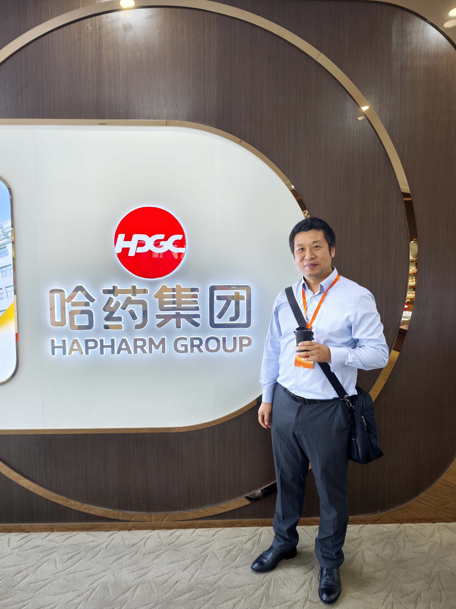

30 August–6 September 2026 · Heilongjiang, China
Invited visit to universities and high-tech companies in Heilongjiang
From 30 August to 6 September 2026, I visited several universities and high-tech companies in Harbin, Daqing, and Qiqihar at the invitation of the Department of Science and Technology of Heilongjiang Province.
Photo: During my visit to Harbin Pharmaceutical Group.